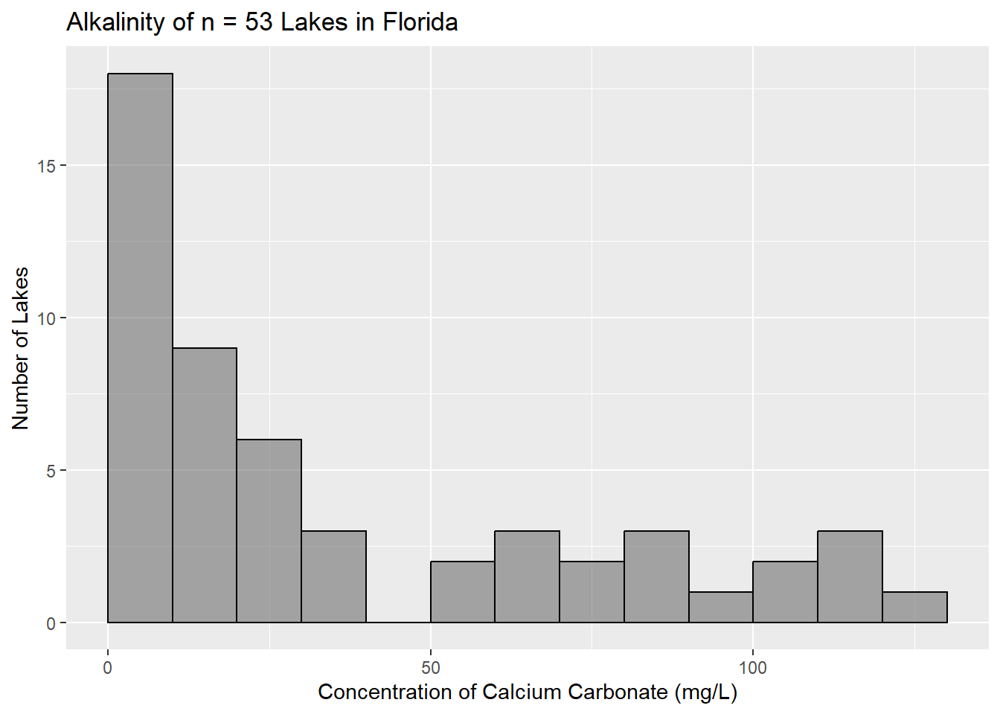
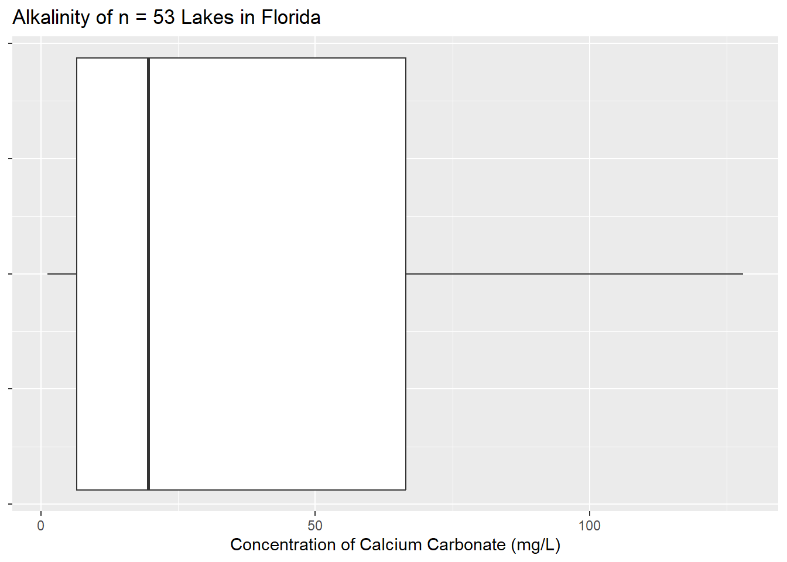
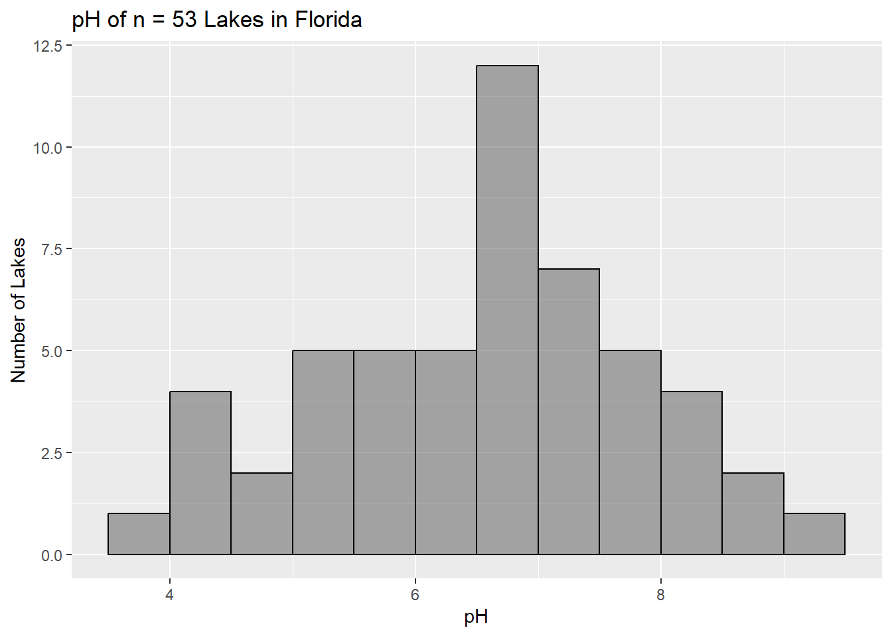
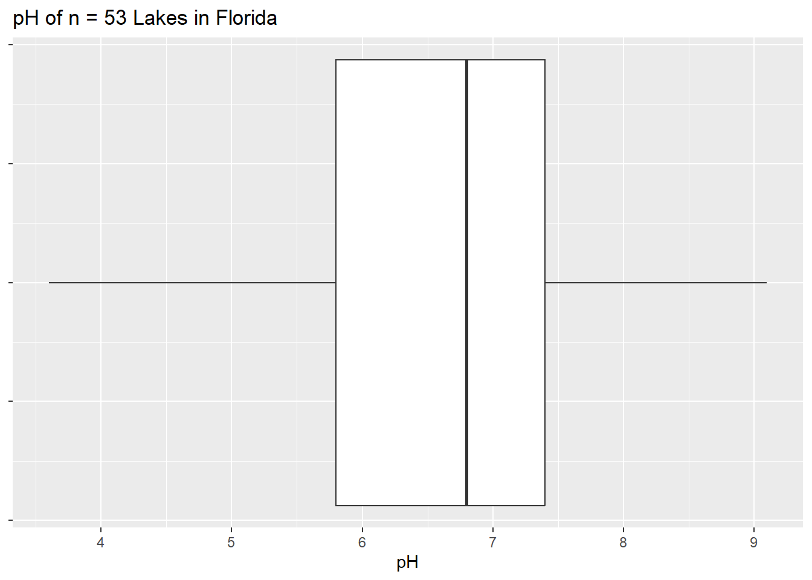
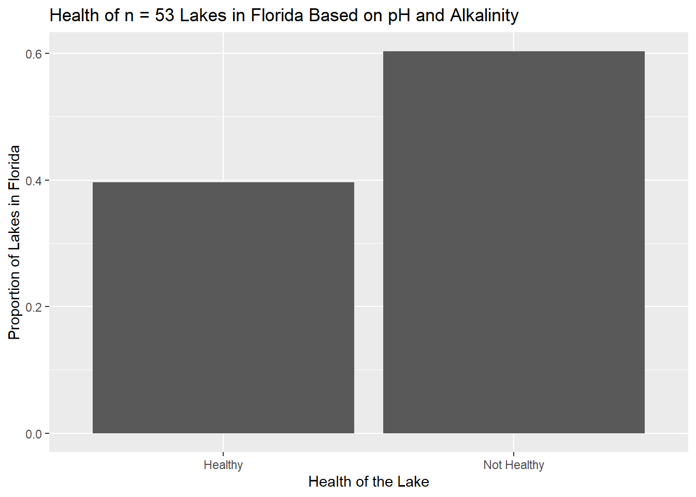

florida <- read_csv("data/florida-lakes.csv", show_col_types = FALSE)One Sample Inference Practice
The Health of Lakes in Florida
The USGS keeps data on the water chemistry of lakes across the United States. These data are publicly available, and were used by other researchers who are interested in estimating the pH of lakes in Florida.
To obtain the data, a list of all documented lakes was used and the USGS used a random number generator to select lakes within each state. USGS scientists from the local offices then went and took multiple water samples from each lake and reported the multiple characteristics.
Import the data here:
Answer
#glimpse(florida)
head(florida, 5)# A tibble: 5 × 12
id lake alkalinity ph calcium chlorophyll avg_mercury num_samples
<dbl> <chr> <dbl> <dbl> <dbl> <dbl> <dbl> <dbl>
1 1 Alligator 5.9 6.1 3 0.7 1.23 5
2 2 Annie 3.5 5.1 1.9 3.2 1.33 7
3 3 Apopka 116 9.1 44.1 128. 0.04 6
4 4 Blue Cypre… 39.4 6.9 16.4 3.5 0.44 12
5 5 Brick 2.5 4.6 2.9 1.8 1.2 12
# ℹ 4 more variables: min_mercury <dbl>, max_mercury <dbl>,
# three_yr_std_mercury <dbl>, age_data <dbl>Here are some symbols that may be helpful.
- Greek letters: , ,
- Statistics symbols: , , ,
- Mathematical symbols: , , ,
- Identify the population of interest
Answer
All lakes in Florida
- Identify the sample and sampling method used
Answer
Sample: 53 lakes in Florida Sampling Method: Random Sample of All Lakes in Flordia
- Are we able to generalize to our population of interest based on results generated from this sample?
Answer
Yes! Since the sample is a random sample from all lakes in Florida, it should be representative of all lakes in Florida since the random sample allows us to mitigate sources of bias in our sample.
- Identify the variables and types of variables measured
id: An identifying number for each lakelake: Name of the lakealkalinity: Concentration of calcium carbonate (in mg/L)ph: Aciditycalcium: Amount of calcium in waterchlorophyll: Amount of chlorophyll in wateravg_mercury: Average mercury level for a sample of fish (large mouth bass) from each lakenum_samples: Number of fish sampled at each lakemin_mercury: Minimum mercury level in a sampled fishmax_mercury: Maximum mercury level in a sampled fishthree_yr_std_mercury: Adjusted mercury level to account for the age of the fishage_data: Mean age of fish in each sample
Answer
idis not a variable
categorical nominal:lake
numeric - discrete:num_samples
numeric - continuous: all remaining variables
Goal 1: Estimate the alkalinity of lakes in Florida
We want to estimate the alkalinity of lakes, which is based on the concentration of calcium carbonate (in mg/L) in Florida using our data (variable name is alkalinity).
- Write the parameter of interest (verbally and symbolically), in context of the scenario.
Answer
the population mean concentration of calcium carbonate (mg/L) for all lakes in Florida
- Using R, calculate the summary statistics and create a well-labeled data visualization for the concentration of calcium carbonate (mg/L) (
alkalinity)
Answer
df_stats(~alkalinity, data = florida) response min Q1 median Q3 max mean sd n missing
1 alkalinity 1.2 6.6 19.6 66.5 128 37.53019 38.20353 53 0gf_histogram(~alkalinity, data = florida,
title = "Alkalinity of n = 53 Lakes in Florida",
xlab = "Concentration of Calcium Carbonate (mg/L)",
ylab = "Number of Lakes",
binwidth = 10,
boundary = 0,
color = "black")
gf_boxplot(~alkalinity, data = florida,
title = "Alkalinity of n = 53 Lakes in Florida",
xlab = "Concentration of Calcium Carbonate (mg/L)") |>
gf_theme(axis.text.y = element_blank())
- Describe the shape (symmetry/modality), center, and spread of the sample distribution of concentrations of calcium carbonate.
Answer
Shape: Skewed Right, Unimodal (histogram)
Center: ,
Spread: , ,
- Calculate a 95% confidence interval for the parameter of interest. Use
t.test().
Answer
t.test(~alkalinity, data = florida, conf.level=0.95)$conf.int[1] 26.99999 48.06038
attr(,"conf.level")
[1] 0.95- Interpret the confidence interval in the context of the question.
Answer
Based on our sample of 53 lakes, we are 95% confident that the population mean concentration of calcium carbonate for all lakes in Florida is a single value in the interval 26.99 mg/L and 48.06038 mg/L.
- Biological activity causes daily and seasonal pH fluctuations. During daylight hours, photosynthesis by algae consumes carbon dioxide, pushing pH upward. At night, respiration adds CO2 back, pulling pH down. Acid rain, decomposing organic matter, and certain fertilizer runoff all tend to lower pH over time. Conversely, heavy algae blooms can temporarily drive pH above 9, which can be toxic to some fish species. Low alkalinity, below 20 mg/L concentration of calcium carbonate, signals vulnerability to pH swings. Using the confidence interval, is it plausible that the true mean concentration of calcium carbonate of lakes in Florida is less than 20mg/L? Explain and justify your answer in context.
Answer
The range of plausible values for the true mean concentration of calcium carbonate, based on the confidence interval, are (29.99, 48.06) mg/L. The interval is entirely greater than 20 mg/L indicating that the true mean calcium carbonate is greater than 20 mg/L and therefore not vulnerable to pH swings.
- Looking at your data, do you have any concerns about the conclusions you made in the previous question. Use evidence from your data that supports or doesn’t support your claim above and explain why. Be sure to cite specific values if appropriate.
Answer
The distribution of concentrations is very skewed left which would cause our mean to be bigger than our median, which is 19.6 mg/L. The median indicates that at least 50% of our lakes have a concentration below 20 mg/L since it is 19.6 mg/L, which would make them vulnerable to pH swings. So even though our confidence interval indicates the true mean is greater than 20 mg/L, that may be due to the skew in our data and the mean may not be the best parameter to use to answer our research question (are lakes healthy).
Goal 2: Test the acidity of lakes in Florida
Most freshwater lakes have a pH that falls between 6.5 and 9.0, and most aquatic organisms are comfortable in the range of 6.5 to 8.5. We are concerned about the health of the lakes in Florida and want to determine if their pH is less than 6.5 (there are no units on pH).
- Write the parameter of interest (verbally and symbolically), in context of the scenario.
Answer
the population mean pH for all lakes in Florida
- Identify the statistical research question:
Answer
Is the true mean pH for all lakes in Florida less than 6.5?
- Using R, calculate the summary statistics and create a well-labeled data visualization for the pH (
ph)
Answer
df_stats(~ph, data = florida) response min Q1 median Q3 max mean sd n missing
1 ph 3.6 5.8 6.8 7.4 9.1 6.590566 1.288449 53 0gf_histogram(~ph, data = florida,
title = "pH of n = 53 Lakes in Florida",
xlab = "pH",
ylab = "Number of Lakes",
binwidth = 0.5,
boundary = 0,
color = "black")
gf_boxplot(~ph, data = florida,
title = "pH of n = 53 Lakes in Florida",
xlab = "pH") |>
gf_theme(axis.text.y = element_blank())
- Describe the shape (symmetry/modality), center, and spread of the sample distribution of pH.
Answer
Shape: roughly symmetric (slight skew left), unimodal (histogram)
Center: ,
Spread: ,
- Set up the null and alternative for our research question.
Answer
, the true mean pH for all lakes in Florida is 6.5
, the true mean pH for all lakes in Florida is less than 6.5
- Calculate the appropriate test statistic and p-value for the test. Use
t.test().
Answer
t.test(~ph, data = florida, mu = 6.5, alternative = "less")
One Sample t-test
data: ph
t = 0.51172, df = 52, p-value = 0.6945
alternative hypothesis: true mean is less than 6.5
95 percent confidence interval:
-Inf 6.886956
sample estimates:
mean of x
6.590566 - Interpret the provided p-value in the context of the scenario.
Answer
There is a 0.6945 probability of observing a test statistics or less assuming the null hypothesis that the true mean pH for all lakes in Florida is 6.5 is true.
- Provide a strength of evidence statement, using a significance level of 0.05.
Answer
There is no evidence against the null hypothesis that the true mean pH for all lakes in Florida is 6.5 $(t = 0.51172, df = 52, = 0.05, p-value = 0.6945).
- Write out what each type of error would be in context and identify which type of error is possible in our test.
Answer
Type I Error: we decide that the true mean pH is less than 6.5 when it is not.
Type II Error: we decide that there no evidence that the true mean pH is less than 6.5, when the true mean pH is less than 6.5.
Since we found no evidence against the null, we may have a Type II Error or we may be Correct.
- Using the summary statistics and data visualizations, provide additional evidence to support your claim from the hypothesis test.
Answer
The median pH is 6.8 which indicates that at least 50% of the lakes in the sample have a pH above 6.5 (from the histogram approximately 31 of the 53 lakes are above 6.5 pH). That said, there are still a fair number of lakes with a lower than 6.5 pH (more than 25% since ).
Goal 3: What proportion of lakes are healthy?
As you have seen, pH or alkalinity alone are not sufficient to determine if a lake is healthy, we must look at the values together. A healthy range for pH is 6.5-8.5 and alkalinity should be greater than 20 mg/L. Though there are other indicators for lake health, we will consider just these two and identify a lake as “healthy” if its pH and alkalinity are within the desired range(s).
Here is code to create a new variable called health that identifies if the lake is healthy or not.
florida <- florida |>
mutate(health = case_when(ph >= 6.5 & ph <= 8.5 & alkalinity > 20 ~ "Healthy",
TRUE ~ "Not Healthy")) #anything else is not healthyWe want to estimate the true proportion of lakes in Florida that are healthy. (variable name is health).
- Write the parameter of interest (verbally and symbolically), in context of the scenario.
Answer
the population proportion of healthy lakes in Florida
- Identify the statistical research question:
Answer
What is the true mean concentration of calcium carbonate for all lakes in Florida?
- Using R, calculate the summary statistics and create a well-labeled data visualization for the classification of lakes as healthy or not (
health)
Answer
tally(~health, data = florida)health
Healthy Not Healthy
21 32 tally(~health, data = florida, forma = "prop")health
Healthy Not Healthy
0.3962264 0.6037736 gf_props(~health, data = florida,
title = "Health of n = 53 Lakes in Florida Based on pH and Alkalinity",
xlab = "Health of the Lake",
ylab = "Proportion of Lakes in Florida")
- Describe the distribution of healthy lakes in the Florida sample.
Answer
The proportion of not healthy lakes is which is greater than the proportion of healthy lakes ().
- Calculate a 95% confidence interval for the parameter of interest (“by hand”), the true proportion of healthy lakes in Florida.
Answer
phat <- 0.3962
se <- sqrt((phat*(1-phat))/53)
phat - qnorm(0.975)*se[1] 0.2645218phat + qnorm(0.975)*se[1] 0.5278782- Interpret the confidence interval in the context of the question.
Answer
Based on our sample of 53 lakes in Florida, we are 95% confident that the true proportion of healthy lakes in Florida is a single value in the interval 0.2645 and 0.5279.
- Based on your confidence interval, is there evidence that less than a majority (51%) of lakes in Florida are healthy?
Answer
The confidence interval contains 51% so it would be plausible that the true proportion is greater than 51%, this is not conclusive, but it is plausible.
Final Conclusion
Write a summary of your findings for the Florida branch of the USGS on the overall health of the lakes in Florida.